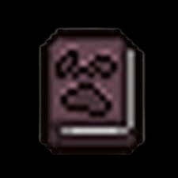
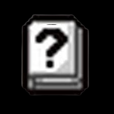
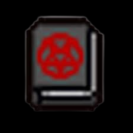
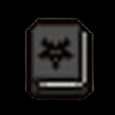
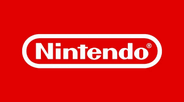

   
| |
|
-Mejoras Gráficas: La Switch 2 ofrece un rendimiento gráfico superior, lo que permite disfrutar de juegos con mejores gráficos y más detalles. -Mayor Capacidad de Almacenamiento: Viene con más espacio interno, lo que reduce la necesidad de comprar tarjetas microSD adicionales. -Compatibilidad con Juegos de Switch Original: Los usuarios pueden jugar sus títulos de la Switch original, lo que facilita la transición. -Nuevos Controles Mejorados: Los controles han sido rediseñados para ofrecer una mejor ergonomía y respuesta, lo que mejora la experiencia de juego. -Funciones Innovadoras: Incluye características como la posibilidad de congelar el estado de los videojuegos, permitiendo cambiar entre títulos sin perder progreso. |
-Precio Elevado: El costo de la consola puede ser un obstáculo para algunos jugadores, especialmente en comparación con la Switch original. -Problemas de Disponibilidad: Al ser un lanzamiento reciente, puede haber dificultades para encontrarla en stock. -Compatibilidad de Accesorios: Algunos accesorios de la Switch original pueden no ser compatibles con la nueva consola. -Duración de la Batería: Aunque ha mejorado, algunos usuarios aún sienten que la duración de la batería podría ser mejorada. -Curva de Aprendizaje: Las nuevas funciones pueden requerir un tiempo de adaptación para los jugadores que están acostumbrados a la Switch original. |
| |
-Compatibilidad con VR: Se rumorea que la consola tiene capacidades para juegos de realidad virtual, lo que podría abrir nuevas experiencias de juego. -Mejoras en la Conectividad: La Switch 2 promete una conectividad mejorada, permitiendo jugar en línea con menos latencia y más estabilidad. -La consola viene con nuevos accesorios que permiten una interacción más dinámica, como un control que se adapta a la forma de la mano del jugador siendo como un raton de una compuradora. -Desarrollo de Juegos Exclusivos: Se están desarrollando títulos exclusivos que aprovecharán al máximo las capacidades gráficas y de procesamiento de la Switch 2. -Easter Eggs: Hay varios "easter eggs" escondidos en la interfaz y en algunos juegos que hacen referencia a la historia de Nintendo y sus personajes icónicos. -Mejoras en la Batería: Aunque la duración de la batería ha mejorado, se han implementado nuevas tecnologías que optimizan el consumo de energía durante el juego. -Interacción con Móviles: La Switch 2 tendrá una mejor integración con dispositivos móviles, permitiendo a los jugadores recibir notificaciones y mensajes mientras juegan. -Ediciones Especiales: Se planean lanzamientos de ediciones especiales de la consola que incluirán diseños únicos y juegos exclusivos como los hemos visto antes con la switch 2. |
CONCLUSION RAPIDA DE LA SWITCH 2 BASADA EN ESTE VIDEO:
La Nintendo Switch 2 representa un avance significativo en la evolución de las consolas híbridas, logrando un equilibrio entre la experiencia de juego en casa y la portabilidad. A continuación, se destacan algunos puntos clave que fueron mencionados antes en las tablas,
Siendo que, En resumen, la Nintendo Switch 2 no solo mejora lo que ya se conocía de su predecesora, sino que también introduce nuevas posibilidades que podrían redefinir la forma en que jugamos.
| INICIO | HISTORIA | SOUNDTRACKS | TIENDA |  |